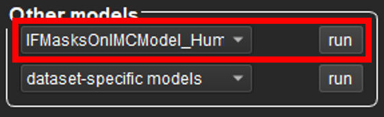
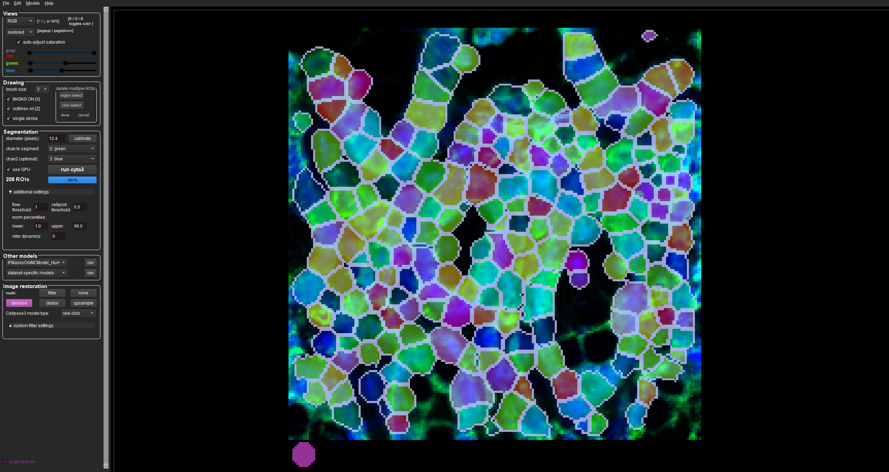
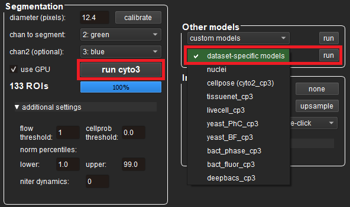
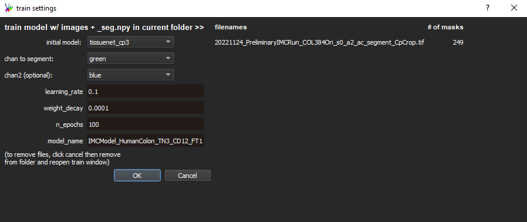

4 Cell Segmentation Using Cellpose
4.1 Installing and Opening Cellpose
Cellpose is a generalist algorithm for cell and nucleus segmentation that supports the ability to train custom models for your own datasets. To install it, open Anaconda Prompt and run the following commands, depending on whether you have a CPU or GPU:
4.2 Using the Cellpose GUI
Note: The steps below were written based on the Cellpose 3 GUI - newer versions may differ slightly
- Drag an image from the
2b_cropped_imagesfolder into the GUI - Click Models → Add custom torch model to GUI and select your custom model (in this case, the model used was titled
IFMasksOnIMCModel_HumanColon_TN3_CD12_FT1) - There are several settings available for you to change:
| GUI Setting | Description |
|---|---|
| diameter (pixels) | Approximate diameter of each cell - you can manually enter this, or press calibrate to let the model estimate it (the size is represented by a disk at the bottom left of the view window) |
| chan to segment | Colour channel containing the cell body - should be set to 2: green |
| chan2 (optional) | Colour channel containing the cell nuclei - should be set to 3: blue |
| use GPU | Whether to use the GPU - should be ticked if possible to speed up segmentation |
| additional settings | You can read more about these settings (eg. flow threshold) here |
- Select your custom model under the
Other modelspane and click therunbutton next to it to start the segmentation:

- After the model has finished running, you should see masks drawn around each of your segmented cells:

Note: you can toggle the coloured masks on and off by pressing X on your keyboard, and also the segmentation outlines by pressing Z.
If the model requires further tuning, then go to the section below on ‘Training a custom model’ - this will teach you how to build a model from scratch. Otherwise, if you are happy with the model’s performance, skip straight to the ‘Batch segmentation’ section.
4.3 Training a Custom Cellpose Model
To train a custom Cellpose model, follow the steps below. There is also a YouTube video here that also demonstrates the process.
- Drag an image from the
2b_cropped_imagesfolder into the GUI - Ensure that your GUI settings are all configured appropriately (eg. your cell diameter is set correctly) - see the table in the section ‘Using the Cellpose GUI’ above for help with this
- Under the
Other modelspane, click thedataset-specific modelsbutton to bring up a drop-down menu of built-in Cellpose models - Test each of these models on your image by selecting them and pressing
run(there is also the additional cyto3 model you can run by pressingrun cyto3next to theuse GPUcheckbox)

- Select the pre-trained model that worked best for your image and run it again
- Correct the segmentation results as you see fit by drawing new ROIs (
right-click, draw andright-clickagain) and deleting incorrect ones (Ctrl + left-click) - remember to pressCtrl + Sto save your changes - Press
Ctrl + Tto open up the interface for training a new model:

- Set
initial modelto the pre-trained model you ran in Step 5, name your custom model and pressOK(the default values for the other parameters should work well in most cases) - The model will train and then auto-run on the next image in the folder
- Repeat Steps 6-9 until you are happy with the model’s performance
- The trained model is saved in a new
modelssub-folder within your2b_cropped_imagesfolder, and will also appear in the GUI under theOther modelspane (in thecustom modelsdrop-down menu)
Note: it is recommended you name your model in a systematic way to keep track of the settings you applied. Our model (IFMasksOnIMCModel_HumanColon_TN3_CD12_FT1) was named with special suffixes at the end to keep track of this information:
- TN3: the initial model used was tissuenet_cp3
- CD12: the cell diameter was set to 12 pixels
- FT1: the flow threshold was set to 1
You are now ready to use the model for ‘Batch segmentation’ in the next section.
4.4 Batch Segmentation
Once you are happy with the model’s performance, run the following commands in Anaconda Prompt:
conda activate cellpose
pip install jupyterlab
pip install chardet
pip install --upgrade charset-normalizer
pip install --upgrade requests jupyter
conda install -c anaconda numpy
conda install -c conda-forge scikit-image
conda install -c conda-forge matplotlib
jupyter labOnce again, this will automatically open a Jupyter instance at http://localhost:8888/lab in your browser. Upload the 3 CellposeBatchSeg.ipynb file using the upload button and set the following variables:
model_path: path to your custom modelanalysis_dir: path to youranalysisfolderchannels: colour channels used for segmentationcell_diameter,flow_threshold,cellprob_threshold: other settings used when training your custom model
An example is shown below.
# Set your required variables here
model_path = "IFMasksOnIMCModel_HumanColon_TN3_CD12_FT1"
analysis_dir = "IMC/analysis"
channels = [2, 3] # This means Channel 1 was 'Green' and Channel 2 was 'Blue' (1 = R, 2 = G, 3 = B)
cell_diameter = 12.4
flow_threshold = 3
cellprob_threshold = -6Once you have finished setting your directories, you can run the rest of the code in the .ipynb file. After running, you will notice 3 new folders created in your analysis folder:
3a_segmentation_masks: contains the integer-labelled cell segmentation masks (1 for each image)3b_for_cellprofiler: contains the segmentation masks and corresponding full stack images for use in CellProfiler5_cellprofiler_output: an empty folder that will contain the output from CellProfiler
After you see the message ‘Done!’ printed, you can move to the next step.